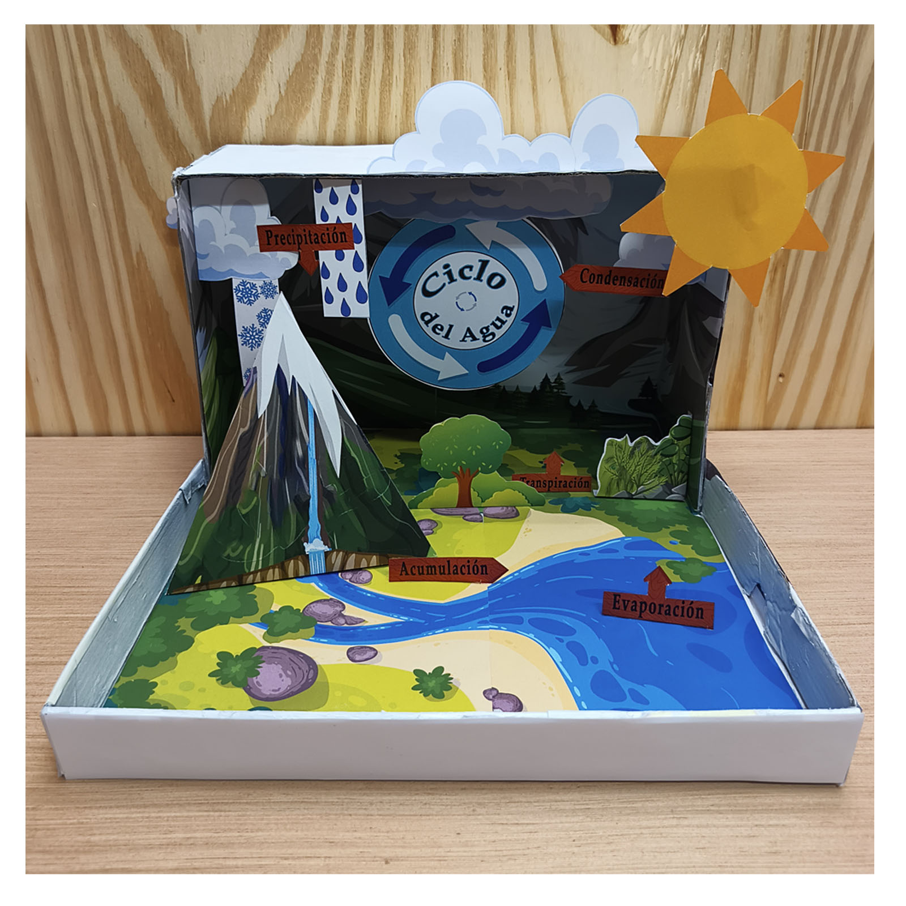
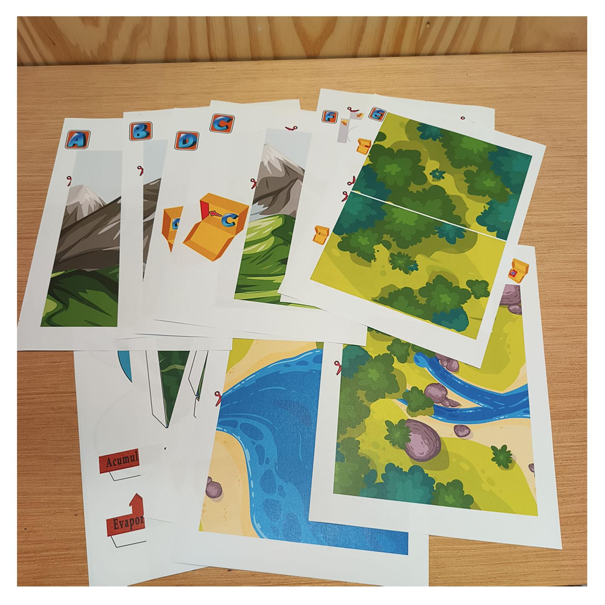
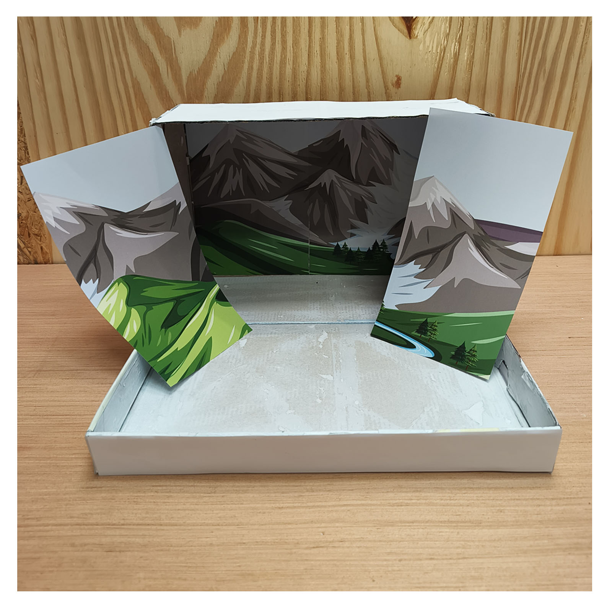
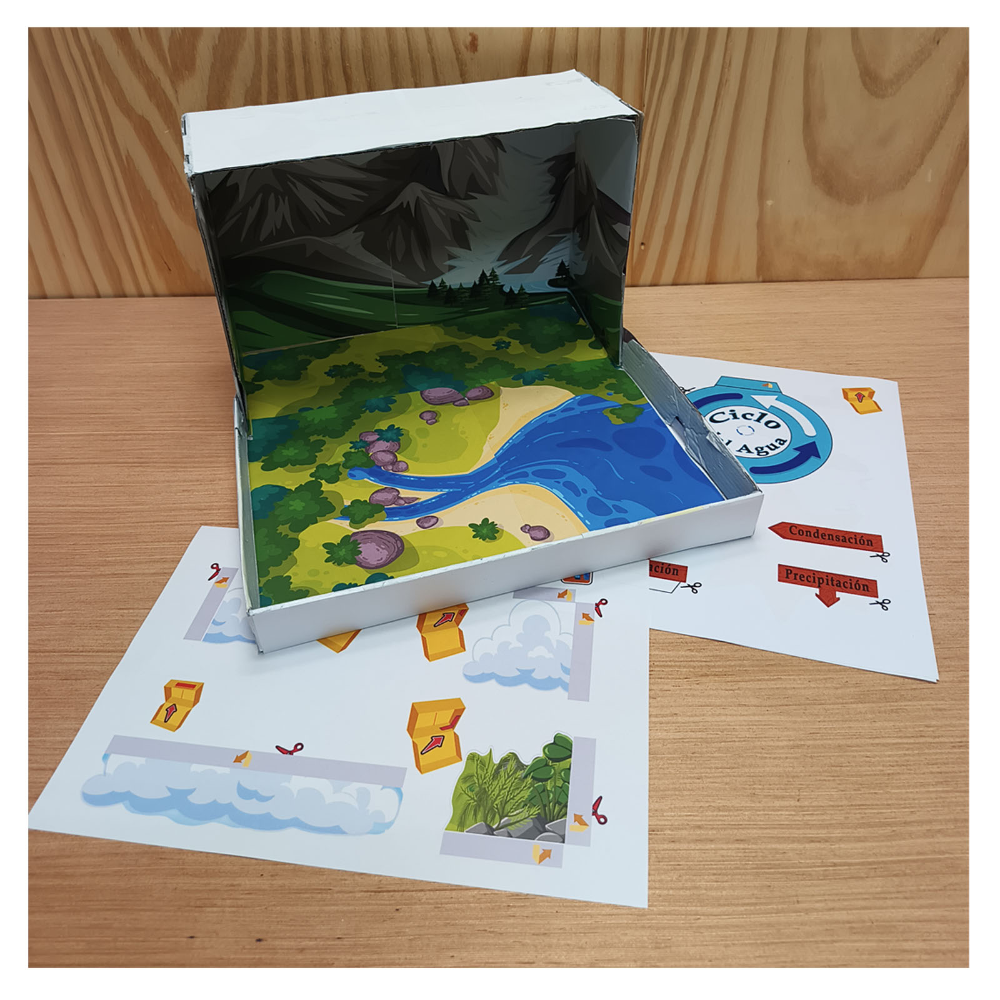
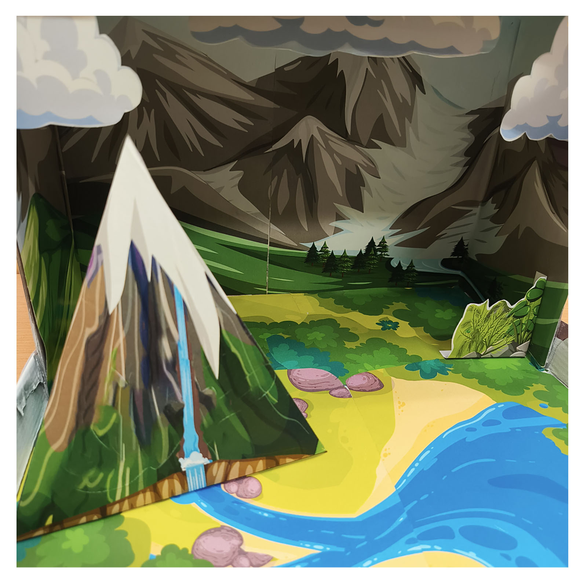
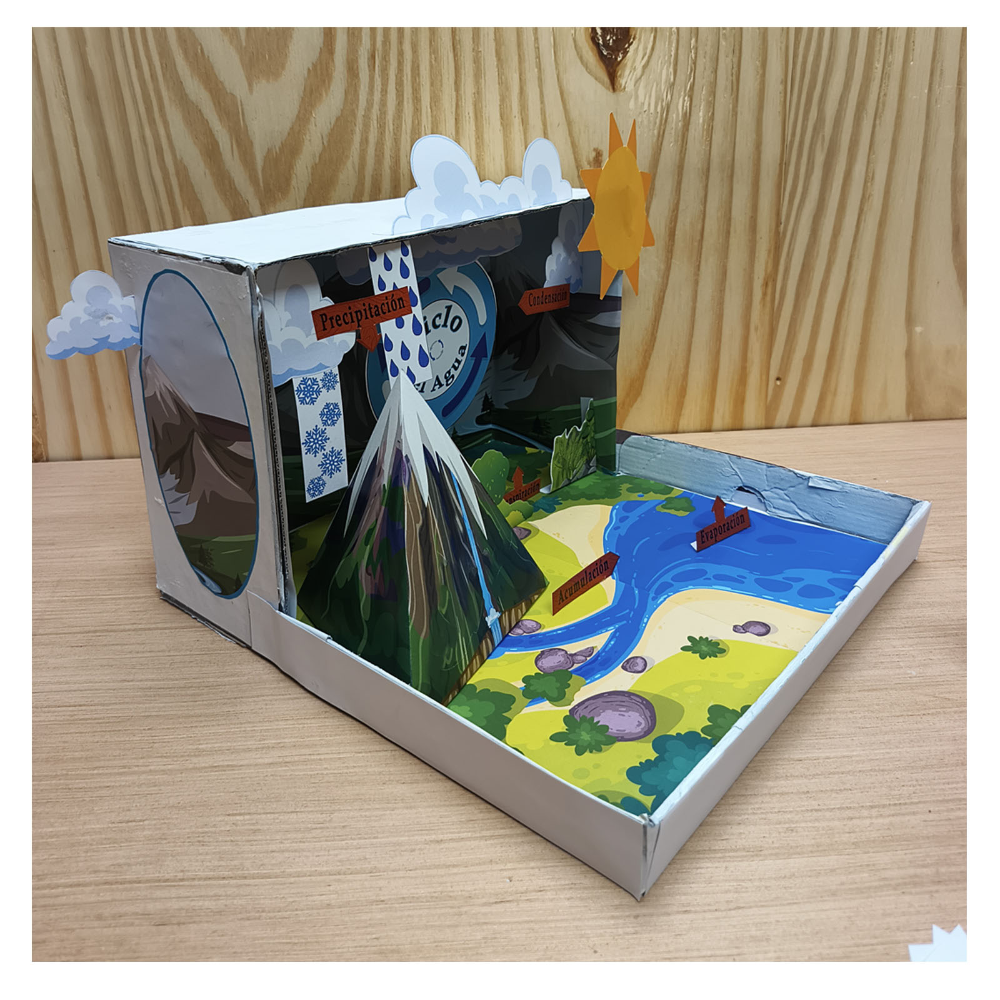
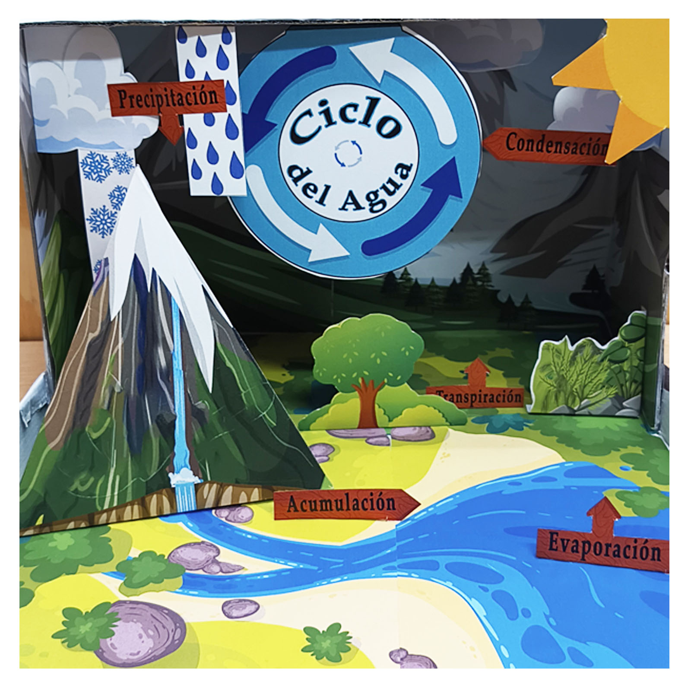
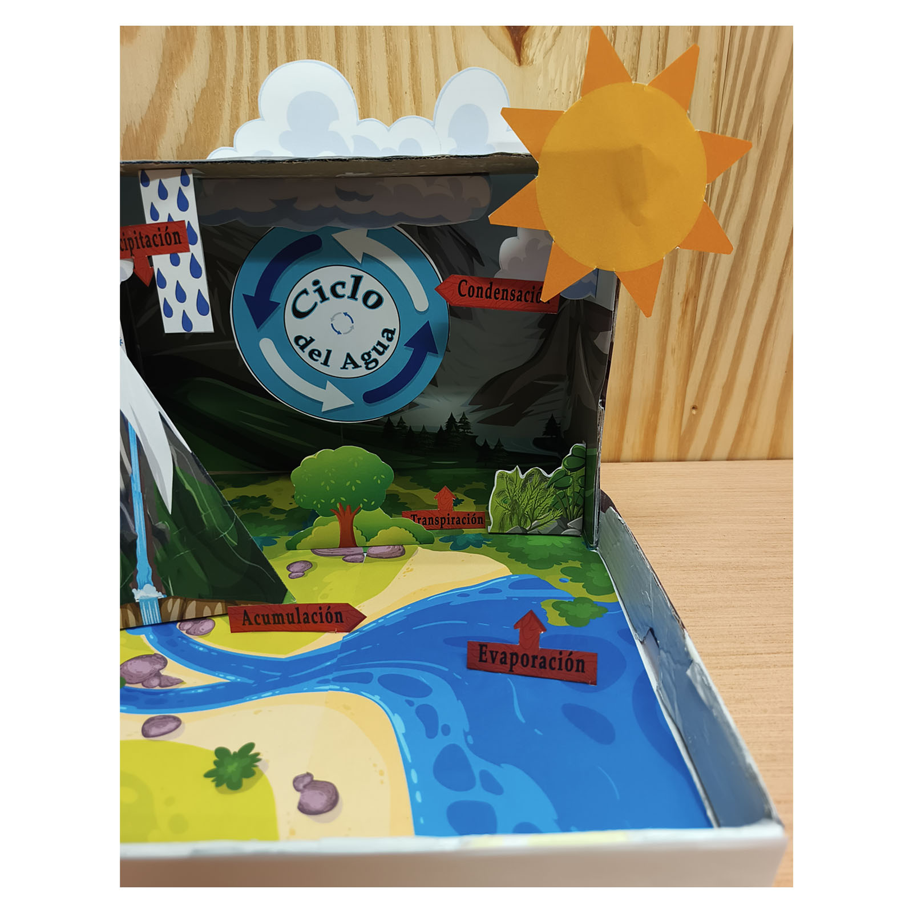
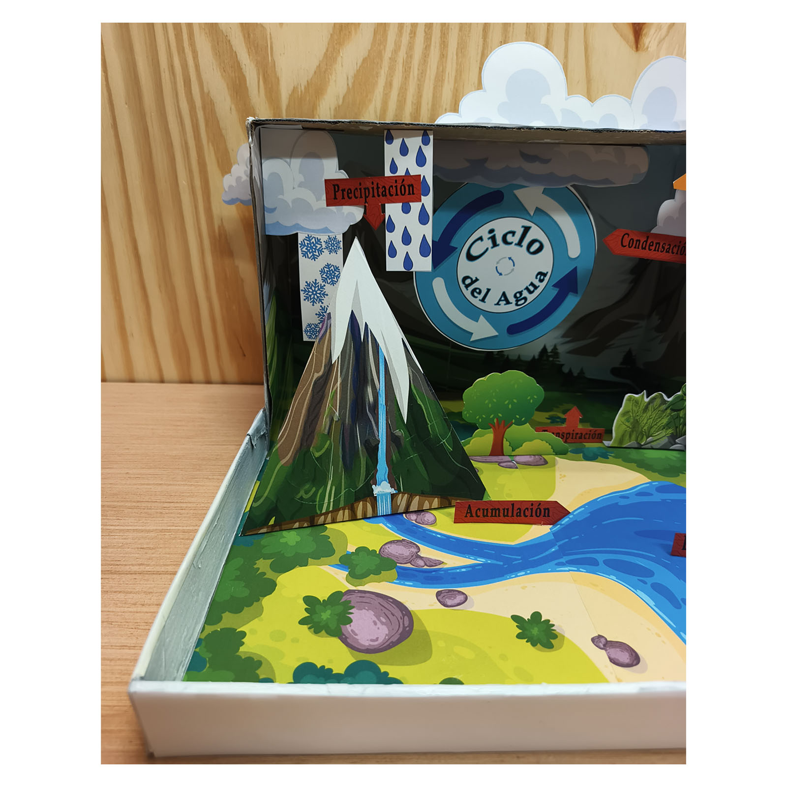

Maqueta del ciclo del agua 3D para niños
Construye una maqueta del ciclo del agua dentro de una caja de cartón y descubre de forma visual cómo el agua se mueve por la naturaleza.
El modelo muestra evaporación, condensación, precipitación, acumulación y transpiración con un paisaje 3D, flechas y carteles en español.
Ver proyecto
Del papel a una maqueta del ciclo del agua
Imprime las piezas, prepara la caja y construye el paisaje paso a paso. Las distintas capas y elementos convierten el proyecto en una pequeña escena 3D donde se puede seguir el recorrido del agua.








Aprende cómo funciona el ciclo del agua
Mientras construyes, puedes seguir el movimiento continuo del agua entre la superficie terrestre y la atmósfera.
Evaporación y transpiración
El calor del sol hace que parte del agua de ríos, lagos y otras superficies se transforme en vapor. Las plantas también liberan agua mediante la transpiración.
Condensación y precipitación
Al enfriarse, el vapor de agua se condensa y forma pequeñas gotas en las nubes. Cuando esas gotas crecen y pesan lo suficiente, el agua vuelve a caer como precipitación.
Acumulación
El agua regresa a ríos, lagos, mares y al suelo. Desde allí puede comenzar de nuevo el ciclo, impulsado principalmente por la energía del sol.
¿Qué encontrarás en el proyecto?
- Paisaje imprimible para crear la base y el fondo de la maqueta.
- Montaña, río, vegetación, nubes, sol y otros elementos 3D.
- Flechas y carteles en español para las etapas del ciclo del agua.
- Piezas para recortar y colocar a distintas profundidades.
- Archivo digital PDF para imprimir en casa o en clase.
Ideal para
- Proyectos escolares sobre el ciclo del agua.
- Clases de ciencias y ciencias naturales.
- Actividades para niños de primaria.
- Aprender sobre evaporación, condensación y precipitación.
- Familias que buscan una base creativa para un proyecto escolar.
¿Cómo se construye?
Solo necesitas una impresora, papel, tijeras, pegamento y una caja de cartón. Después puedes seguir las piezas impresas para crear el paisaje y colocar cada etapa del ciclo.
¿Quieres construir tu propia maqueta del ciclo del agua?
El proyecto es una descarga digital en PDF. Después de la compra podrás imprimir las páginas y empezar a construir.
$3.49 USD · Pago único · Descarga digital